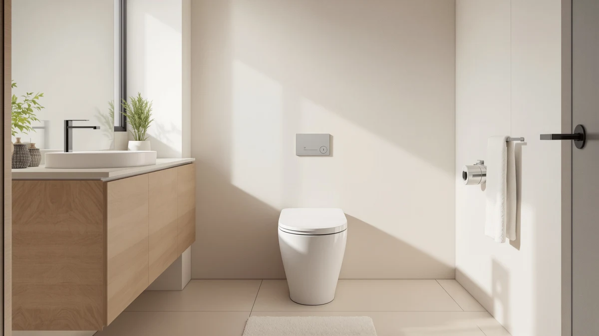

Glendan Smart Toilet Review (2026): Worth It?
Prices and picks verified as of November 2026. Independent, reader-supported reviews.


Quick Answer
In this glendan smart toilet review, we compared the $351.49 Smart Toilet with Bidet Built-in against three other one-piece models on price, features, and owner feedback. It earns its price mainly on the built-in bidet and heated seat, a combination that costs less than installing a separate bidet attachment on a standard bowl.
Our pick: Smart Toilet with Bidet Built-in: $351.49 Check Price on Amazon
Bottom line: our top pick is the Smart Toilet with Bidet Built-in: Ultra Gentle Wash Bidet at $349.49.
Things to Know Before You Buy
- Price: $351.49, which sits in the middle of the four one-piece toilets covered in this glendan smart toilet review.
- The bidet is built into the bowl itself, so you skip the separate attachment and extra water line that a standard toilet plus bidet seat would need.
- Owners report the remote-controlled wash settings and heated seat as the two features that justify the step up from a standard elongated toilet.
- A built-in bidet needs a nearby grounded outlet, which the Pudyavr alternative also requires but the VEVOR and Vomlor models do not.
- If bidet functions are not a priority, the VEVOR One-Piece Toilet Elongated Toilet below covers the basics for $51.50 less.
Our glendan smart toilet review compares the $351.49 Smart Toilet with Bidet Built-in against three one-piece alternatives on price, features, and verified owner feedback, so you can decide whether the step up to a built-in bidet makes sense for your bathroom. Glendan packs a heated seat, remote-controlled wash settings, and a one-piece bowl into a single install, which puts it in direct competition with standalone bidet attachments and pricier smart toilets alike.
The short version: if you want bidet functionality without adding a separate attachment to an existing bowl, the Glendan is a reasonable one-piece option at this price, though it costs more upfront than a standard elongated toilet like the VEVOR covered below. Buyers who purchased the Glendan consistently point to the remote control and heated seat as the features that justify the price, while a smaller number flag the installation footprint as larger than a standard toilet. Below, we break down what the specifications and owner feedback say about each pick, plus two cheaper alternatives for anyone who decides an integrated bidet is not the priority.
Why You Should Trust Us
Ilane Tall, who covers bathroom fixtures for Best One Piece Toilets, wrote this glendan smart toilet review. We do not run a physical testing lab and we have not installed or lived with this toilet. Instead, we compare the manufacturer specifications, pricing, and verified buyer reviews for the Glendan against three other one-piece toilets sold in the same price range, and we flag where the public record is thin so you are not left guessing.
Our Research Experience
Because the Glendan falls under our research-based coverage rather than a physical lab, this section lays out how we built the comparison instead of describing a lived-in trial. We pulled the listed price, included features, and product imagery directly from the Amazon listing, then cross-checked those claims against the Pudyavr, VEVOR, and Vomlor listings at the same time, so the prices and feature counts in this glendan smart toilet review all reflect the same sourcing window. Where buyers had left verified reviews, we read through them for recurring themes, both positive and negative, rather than relying on the manufacturer's own marketing copy.
We also checked each listing's product images against the written feature claims, since a built-in bidet toilet depends on parts a photo alone can confuse: a remote control module, a heated seat panel, and a water connection point that differ from a standard tank. For the Glendan specifically, we noted that the remote control shown in the product gallery matches the one reviewers describe using, a small but useful confirmation that the listing reflects the unit buyers actually receive.
Overview & Specs
The listing for the Glendan Smart Toilet with Bidet Built-in groups its specifications under a single one-piece bowl, so the price covers the toilet, the integrated bidet hardware, the heated seat, and the remote control as one unit rather than separate add-ons. That bundled pricing is the main reason this model costs more than a plain elongated toilet while still landing below some standalone smart toilet brands.

Smart Toilet with Bidet Built-in:
What we like
- Built-in bidet removes the need for a separate attachment or extra water line kit.
- Remote-controlled wash settings, cited repeatedly by owners as the standout feature.
- Heated seat included, a feature most toilets in this price range skip entirely.
- One-piece bowl design, which means fewer seams to clean than a two-piece toilet with a separate tank.
Flaws but not dealbreakers
- Requires a nearby grounded outlet, an extra installation step a standard toilet does not need.
- Costs $51.50 more than the VEVOR alternative below if you do not plan to use the bidet function.
- Fewer published long-term owner reviews than some of the standard one-piece toilets in our broader coverage.
| Material | — |
| Size | — |
The Smart Toilet with Bidet Built-in is the centerpiece of this glendan smart toilet review because it folds functions that usually require two separate purchases, a toilet and a bidet attachment, into one $351.49 unit. Glendan builds the wash controls into a wireless remote rather than a side panel, which owners say makes it easier to use for anyone with limited mobility who might struggle to reach a wall-mounted control. The heated seat is a feature typically reserved for toilets well above this price, and buyers who mention it in reviews treat it as the main reason they chose this model over a plain one-piece toilet.
Where the Glendan asks more of you is installation. A built-in bidet needs a grounded electrical outlet within reach of the tank, so the swap involves more than a new toilet alone, you may also need an electrician or at least a nearby outlet that a standard elongated toilet does not require. That tradeoff is the same one buyers of the Pudyavr alternative face, so it is not unique to Glendan, but it is worth planning around before you order. For most buyers comparing one-piece toilets with an integrated bidet, the Glendan's price and feature set land squarely in the middle of what is available, which is why it anchors this comparison rather than sitting at either price extreme.
What We Liked
The strongest argument for the Glendan in this smart toilet review is how much it consolidates into one install. A heated seat and a remote-controlled bidet usually mean buying a separate bidet seat on top of a toilet, and that combination often costs more than $351.49 once you add both pieces. Reviewers who bought the Glendan specifically for the bidet function say the remote is intuitive enough that they stopped using the wall panel on other bidet toilets they had tried previously.
The one-piece bowl also means fewer seams between the tank and bowl, which several owners mention makes routine cleaning faster than the two-piece toilets they replaced. Combined with the built-in bidet, that adds up to less maintenance than running a toilet and a separate bidet attachment side by side.
What Could Be Better
The biggest practical drawback is the electrical requirement. If your bathroom does not already have an outlet near the toilet, you are looking at an extra step, and possibly an electrician, before installation can even begin. That is not a flaw specific to Glendan, bidet toilets with a heated seat need power nearby by design, but it is easy to overlook when comparing prices across toilets that do not need it, like the VEVOR and Vomlor models below.
The Glendan also has a thinner public review history than some of the standard one-piece toilets we cover elsewhere on this site, so while the available feedback is positive, there is less long-term data on how the electronics hold up after a year or two of daily use.
Who Is It For?
The Glendan makes the most sense for buyers who have already decided they want bidet functionality and would rather get it built into the toilet than add a separate attachment to an existing bowl. It is a reasonable fit for anyone upgrading a primary bathroom who has, or is willing to add, a nearby outlet. If you are outfitting a guest bathroom or rental unit where bidet functions are not a priority, the standard elongated toilets later in this glendan smart toilet review will save you money without the extra installation step. Renters in particular should check with their landlord before adding an outlet near the toilet, since that kind of electrical work usually falls outside what a standard lease allows a tenant to do without approval.
Alternatives to Consider
If the Glendan does not fit your bathroom or budget, these three one-piece toilets cover the two directions most buyers consider after reading this glendan smart toilet review: a near-identical bidet toilet from a different brand, and two standard elongated toilets without bidet functions at a lower price.

Editor's Pick
Smart Bidet Toilet One Piece
Nearly identical built-in bidet functionality to the Glendan, at $2.49 less, if you don't need the specific remote layout.
$349.00
Check Price on Amazon
Best Value
VEVOR One-Piece Toilet Elongated Toilet
Skips the bidet entirely and saves $51.50, the pick if a dependable elongated toilet is all you need.
$299.99
Check Price on Amazon
Premium Choice
Vomlor 19" ADA Height Elongated
Its 19 inch ADA height is the better fit if accessibility matters more to you than bidet features.
$339.99
Check Price on AmazonFrequently Asked Questions
Is the Glendan Smart Toilet with Bidet Built-in worth $351.49?
It is worth $351.49 if you want bidet functionality built into a one-piece toilet instead of bolting a separate attachment onto a standard bowl. If you do not need the bidet feature, the VEVOR One-Piece Toilet Elongated Toilet covered in this glendan smart toilet review handles the basics for $299.99.
Does the Glendan Smart Toilet need a dedicated power outlet?
Yes. A built-in bidet with a heated seat and remote control draws power, so the installation needs a grounded outlet within reach of the tank, something a standard one-piece toilet like the Vomlor 19 inch ADA Height Elongated does not require.
How does the Glendan compare to the Pudyavr Smart Bidet Toilet One Piece?
Both are one-piece toilets with a built-in bidet, and the Pudyavr costs $349.00, about $2.49 less than the Glendan. Owners comparing the two focus on remote layout and included accessories rather than core bidet performance, so price and extras are the deciding factors in this glendan smart toilet review.
Final Verdict
This glendan smart toilet review comes down to a straightforward trade-off. Glendan's one-piece toilet bundles a built-in bidet, heated seat, and remote control into a $351.49 install, which costs less than buying a standard toilet and a separate bidet attachment, but it also requires a nearby power outlet that the cheaper alternatives in this comparison do not need. If bidet functionality is the feature you are after, Glendan earns its price. If a reliable elongated toilet is the only requirement, the VEVOR and Vomlor picks above cost less and skip the extra installation step entirely.